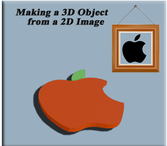
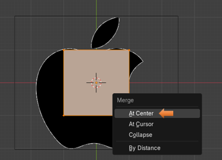

~Making a 3D Object From a 2D Image~
6/23/2025
Set the View Port at the Correct Angle
Merge the cube into a single Vertex
Flatten the outline on the Floor

Start with the Cube
We are going to start this project by opening Blender. Then just use the cube, but honestly for doing something like this, we could use just about any object. This is because all we really want to do with it, is to steal one of it dots. Or as Blender likes to refer to them, we want to confiscate one of them - thar vertices.
Obtain a Reference Image
Next, what we want to do, is to get some image from Google. I am going to make this one super simple and just start out with the Apple Logo.
Set the View Port at the Correct Angle
Before we add the reference image, we want to make sure that we bring this image in at the right angle. Since we want to do a trace of the object, and we want the object to appear as if it is lying flat on the floor, we want to bring this image in from the top view. That way when we complete this trace, it will appear as if we are looking down on it.
Now IF instead, you want your object to be standing up, then you will want to bring in the image from the front view.
Bring in the Image
Shift -A-Image Reference
Here is the reference Image, after it is brought in.
Edit Mode
Make sure you have the cube selected, and then go from Object mode to Edit mode. So, we can begin working on our project.
Once in Edit mode you want to hit the A key to select everything. Your cube should have an orange outline around the entire thing now.
Merge the cube into a single Vertex
Now with the cube completely selected we want to hit the M key on our keyboard. This is the hot key for merge. Then just select the option that says: Merge at Center.
Where we see this orange dot here, is where our vertex is. You can click on it to make sure the vertex is selected; it will turn white. I find that either leaving it orange or selecting it and turning it white that I still am able to move it, and then you can move it.
Start Tracing the Object
Since we want that vertex to be on the edge of the apple, so that we can trace it. We want to hit the G key on the keyboard to Grab it, and then move it to the outline edge of the apple.
Now hit the E key to start extruding this dot along the edge of the apple, every time you hit the E key, you create a new vertex; and so it is like we are tracing, or stitching around the border of the apple.
Take the first and last vertex, and merge them together to close the outline. Hitting the M key will merge these two vertices together.
To select your entire outline.
Hold down the alt key and then left click on one of the vertices that you just created to select the entire outline.
Flatten the outline on the Floor
If after creating the outline you find that it is not flat
We want to scale it on the Z axis to 0
Hit the S key to scale, the Z key, then hit the 0 key on the numpad.
S, Z, 0
Now hit the 1 key on the numpad to go to orthographic front view.
Your Vertices should now be Flat
14
Fill the outline
Now with the entire line selected, you want to hit the F key to fill the outline.
To Create a Separate Object
Object mode top view.
If you added the extra meshes from the Preference menu you can actually add a single vert from the add menu.
Now bring that vertex into Edit mode
Hit the G key and move this single vertex to the outline of the stem.
Now extrude this vertex and then merge or fill the first and last vertex that you created along this edge. To use the merge method, you would press the M key on the keyboard and select Merge at Center. Or, you can select the first and last vertices and hit the F key to Fill it with an edge.
After hitting F to fill edge between the first and last vertex.
Now hit the alt key with the left mouse button, select a vertex along this edge. Once again this is an easy way to select the entire outline
Extrude out the new faces.
Go back to object mode and click on both the apple and the leaf to select multiple objects, and bring them both into Edit mode.

Back in Edit mode, select Face mode
Go to Front orthographic mode. The 1 on the numpad. Hit the E key to extrude each of the two items on the screen.

Material Property panel
Go to the material section of the property panel, and change the color of each object.
You must be in the Material mode, which you can set at the top of the view port, to see our color change.
Select the apple and turn it red from the property panel, and then change the stem to be green. You will have to click on the New button to change colors from Red to Green after selecting the leaf to change its color.
Turn off the eye for the Reference image
Well, that is about it for this tutorial. I hope you enjoyed learning how to create a 3D object from a very simple image.